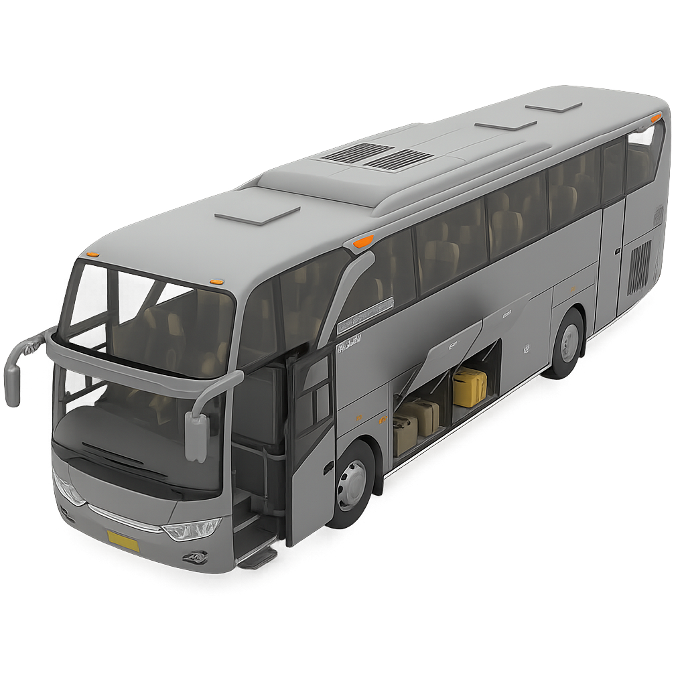

Panel Monitor Bus Interaktif

Informasi Sistem
üö™
Pintu
Belum dipilih
üß≥
Bagasi
Belum dipilih
üí∫
Kursi
Belum dipilih
ü뮂Äç‚úàÔ∏è
Pengemudi
Status: Normal & Fokus
Waktu Mengemudi: 2 jam 15 menit
üå§Ô∏è
Cuaca & Suhu
Jakarta: Cerah 29°C
Kabin: 24°C